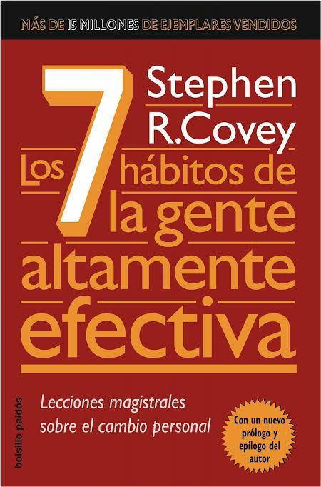
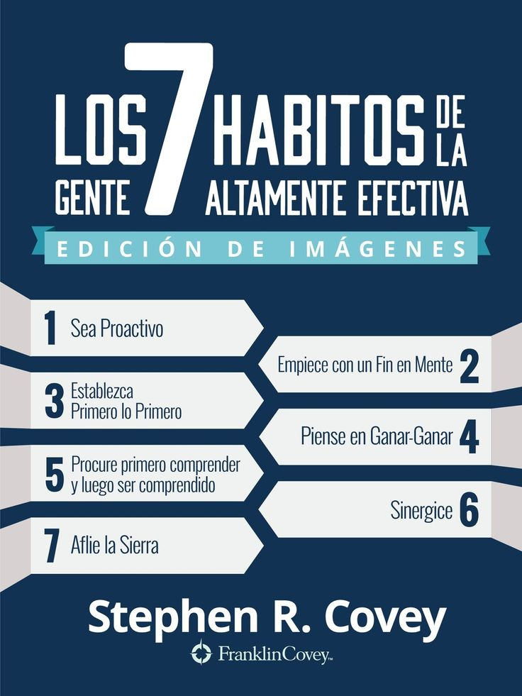

Este libro de Stephen Covey presenta un enfoque de efectividad basado en principios. A través de sus páginas, el autor nos guía desde la dependencia hacia la interdependencia, trabajando en la victoria privada y pública.
No somos producto de nuestras circunstancias, sino de nuestras decisiones. Ser proactivo significa asumir la responsabilidad de nuestra propia vida y actuar en nuestro círculo de influencia.
Consiste en definir nuestras metas y valores antes de empezar cualquier proyecto. Es la creación mental que precede a la creación física.
Se trata de la gestión del tiempo y la disciplina para priorizar lo que es importante por sobre lo que es urgente.
Es un marco mental y del corazón que busca el beneficio mutuo en todas las interacciones humanas.
Es la base de la comunicación efectiva. Implica practicar la escucha empática para comprender profundamente al otro antes de dar nuestra opinión.
La sinergia ocurre cuando el todo es mayor que la suma de sus partes. Es el trabajo en equipo y la valoración de las diferencias.
Es el hábito de la autorenovación en las cuatro dimensiones de nuestra naturaleza: física, mental, espiritual y social/emocional.
